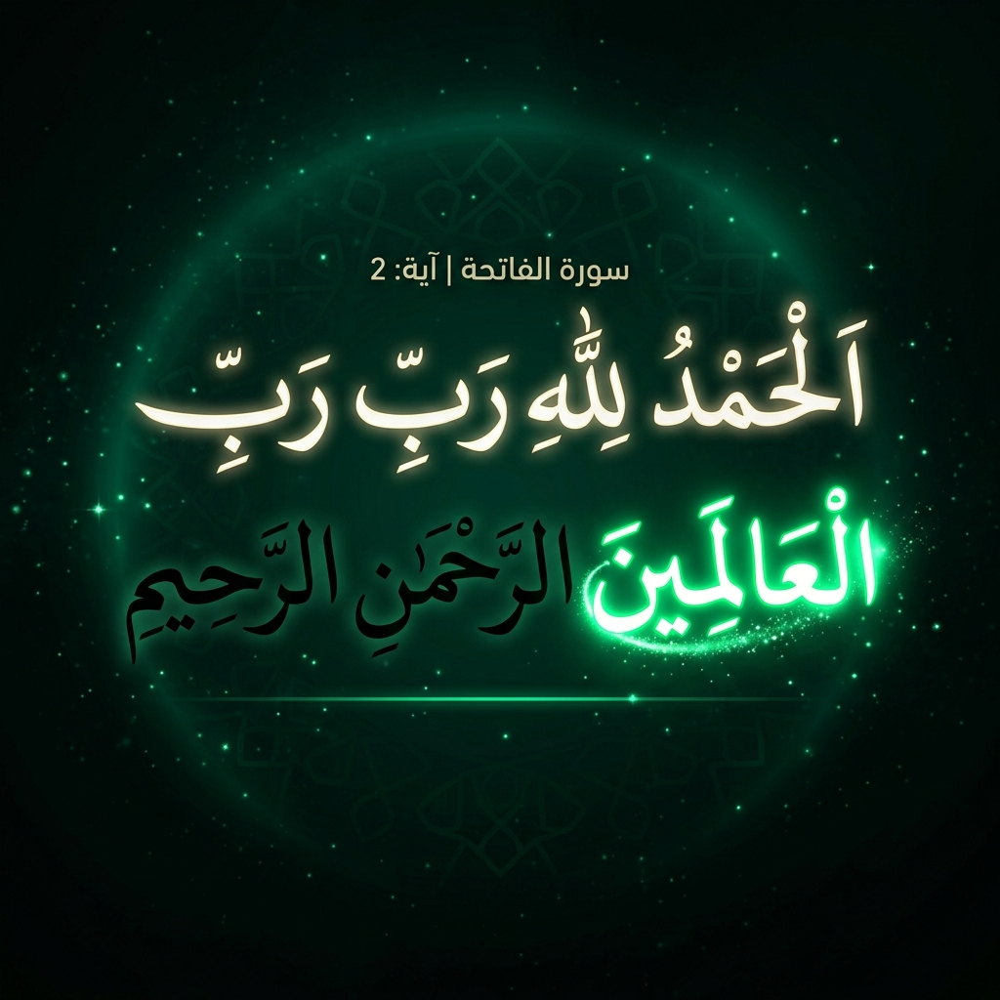
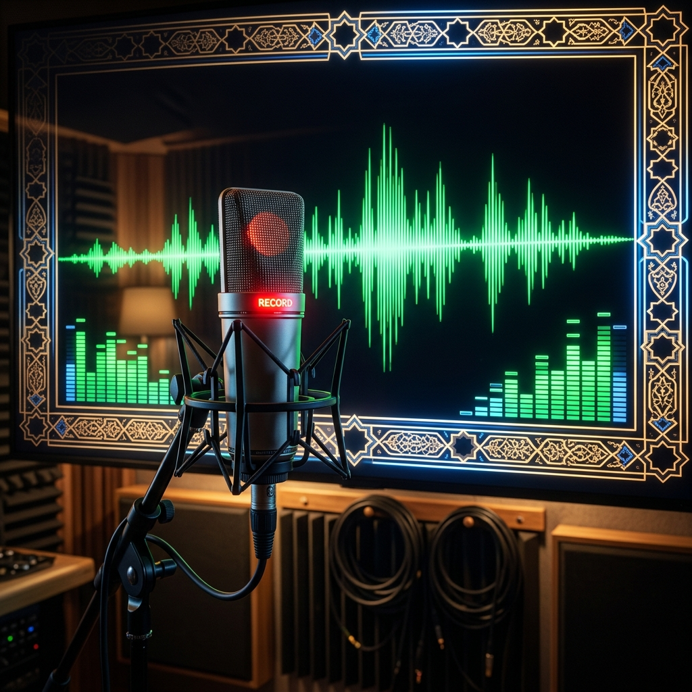

منصة متكاملة تجمع بين الاستماع للقرّاء المفضلين، المتابعة بخاصية الكاراوكي الذكي، التسميع الصوتي بتقنيات الاستوديو، ووضع الأطفال المرح — كل ذلك في مكان واحد
وَلَقَدْ يَسَّرْنَا الْقُرْآنَ لِلذِّكْرِ فَهَلْ مِن مُّدَّكِرٍ
— سورة القمر، آية ١٧صُمّمت كل ميزة بعناية فائقة لتقديم أفضل تجربة حفظ وتسميع ممكنة

تابع كلمات الآية المضيئة بالتزامن مع صوت الشيخ القارئ — كلمة بكلمة في الوقت الحقيقي، لتعلّم النطق السليم والتجويد

سجّل تلاوتك بمؤثرات صوتية احترافية: صوت عادي، استوديو محسّن، أو صدى المسجد الفخم — ثم قارن تسجيلك بصوت الشيخ
اختر سوراً متعددة واستمع إليها بالترتيب تلقائياً بصوت قارئك المفضل — مثالي للاستماع أثناء القيادة أو قبل النوم
واجهة مبهجة بألوان زاهية وأيقونات كرتونية تجعل الأطفال يحبّون حفظ القرآن — مع صوت الشيخ خليفة الطنيجي المخصص للأطفال
كل كلمة تُضاء بالتزامن مع صوت القارئ لتتابع النطق الصحيح
اختر أي سورة من القرآن الكريم واختر صوت الشيخ المفضل لديك من بين أكثر من ٨ قرّاء مشهورين
اضغط زر التشغيل وتابع الكلمات المضيئة بالتزامن مع صوت القارئ. فعّل التكرار أو التلاوة المتتالية حسب حاجتك
أخفِ النص واضغط زر التسجيل لتسميع الآية غيباً بصوتك. اختر مؤثر صدى المسجد لتجربة روحانية مميزة
استمع لتسجيلك وقارنه بصوت الشيخ. تابع تقدمك عبر مؤشر الحفظ الذكي وانتقل للآية التالية حتى تتم حفظ السورة كاملة
لا تحتاج لتسجيل حساب أو تحميل تطبيق — افتح المنصة مباشرة من المتصفح وابدأ الحفظ فوراً. يعمل على جميع الأجهزة.
📖 افتح محفّظ القرآن الآنيعمل على الهاتف والتابلت والكمبيوتر — بدون تحميل